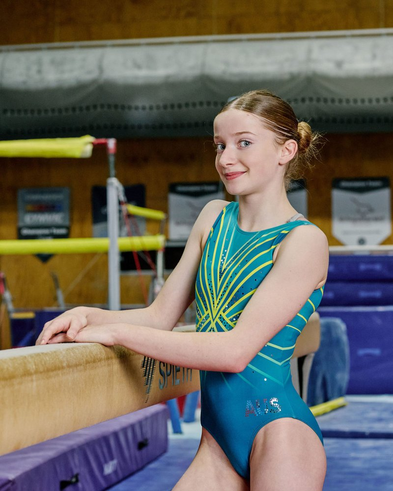
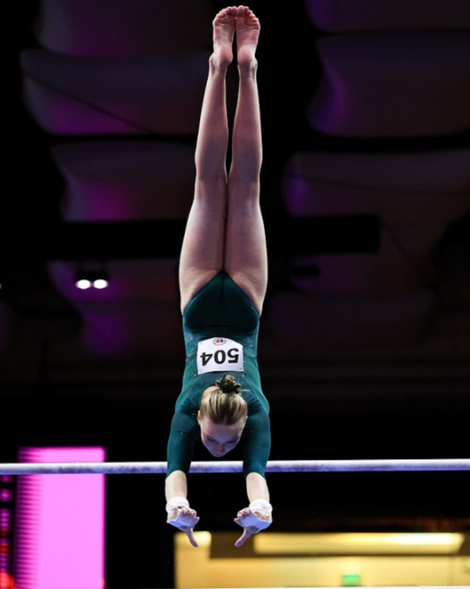

Most of what we write about happens in gyms and stadiums around Victoria. This one happened in Senegal. The 2026 Youth Olympic Games in Dakar were the first Olympic Games held in Africa, and two of the gymnasts in our database were there in green and gold.
THE GAMES
Artistic gymnastics ran from 7 to 11 November. Gymnastics Australia selected six gymnasts, three for WAG and three for MAG. The women's team was Olivia Meaney, Alice Johnson and Zara Andrews.
The format was a little different from what we're used to. Twelve women's teams of three went through qualification, and the top eight went to a team final. The top all-arounders from qualification went to an all-around final. There were no apparatus finals this time. Instead, there was a new mixed team event pairing one boy and one girl from each country, which The Gymternet describes as a preview of a format coming to the 2028 Olympics.
MEET THE VICTORIANS


Olivia Meaney trains at YMCA Geelong. She has worn the green and gold before, and the Oceania Championships in Brisbane in May were her fourth time representing Australia. Back then, the Geelong Times reported she already had the Youth Olympics in her sights. In our records, she won Developing International at this year's Trial 1 (50.0) and at the Senior Victorian Championships (49.7).
Alice Johnson trains at Waverley Gymnastics Centre, coached by Jess Haintz and Yusuf Topari. She represented Australia at the 2025 Junior World Championships in Manila, made the bars final at the 2025 DTB Pokal in Germany, and was crowned Junior Oceania All-Around Champion in Brisbane in May. In our records, she won Developing International at State Trial 2 in 2025, and took silver at Trial 1 this year.
QUALIFICATION
The women qualified on Sunday 8 November, and Australia went through to the team final in sixth on 97.129. China (106.864) and Japan (106.364) led the way.
Meaney was the top Australian in the all-around, 13th on 49.131, and her 13.166 on vault tied for sixth on the apparatus. Johnson qualified 20th on 47.998 with 12.533 on beam, the ninth-best beam score of qualification. Both made the all-around final. Andrews competed bars, beam and floor, with her best score of 11.566 on beam.
Women's Qualification, Australian Gymnasts
| # | Gymnast | VT | UB | BB | FX | Total |
|---|---|---|---|---|---|---|
| 13 | Olivia Meaney | 13.166 | 11.766 | 11.933 | 12.266 | 49.131 |
| 20 | Alice Johnson | 11.533 | 11.866 | 12.533 | 12.066 | 47.998 |
| - | Zara Andrews | - | 10.966 | 11.566 | 11.333 | 33.865 |
THE TEAM FINAL
In Monday's team final, Australia placed seventh on 91.263. China took gold on 107.798, with Japan just 0.234 back in silver and France rounding out the podium on 105.231. Johnson and Andrews competed all four apparatus for Australia in the final. Johnson's 47.898 was the top Australian total, including 12.466 on bars, and Andrews added 43.365.
THE ALL-AROUND FINAL
Tuesday's all-around final was won by Polina Dmitrieva on 54.665, with France's Louane Plisson in silver on 53.665 and China's Zhong Qi rounding out the podium on 53.199.
Meaney finished 12th on 48.165. Her vault was strong again at 13.066, and her 12.366 on beam was her best beam score of the Games. Johnson finished 18th on 45.366.
Women's All-Around Final, Australian Gymnasts
| # | Gymnast | VT | UB | BB | FX | Total |
|---|---|---|---|---|---|---|
| 12 | Olivia Meaney | 13.066 | 11.933 | 12.366 | 10.800 | 48.165 |
| 18 | Alice Johnson | 11.600 | 11.233 | 11.033 | 11.500 | 45.366 |
THE MIXED TEAM
Johnson's week finished on Wednesday with the mixed team event, alongside NSW's Elijah Wu. Twelve pairs started, eight went through to the semifinal, and four made the final. In each round, both gymnasts competed one apparatus and their two scores were added together.
Australia came through the first round in fifth on 25.366, with Johnson scoring 12.566 on bars and Wu 12.800 on floor. In the semifinal, Johnson scored 11.533 on beam, and Australia finished eighth on 21.366, so they didn't advance to the final. China took the title on 27.832, with Japan in silver and Israel rounding out the podium.
WORTH THE TRIP
A team final, two all-around finalists and a run in a brand-new Olympic event. Last year, both of these girls were on our State Trial results pages. This month they were in Dakar. We'll be watching for them both when the 2027 season gets going.
Results in this article are from The Gymternet. The Youth Olympic results aren't part of our database, so they won't show up on Olivia and Alice's profile pages.
Header photo: Alice Johnson on beam at the 2026 Oceania Championships, courtesy of Media Queensland/Alexander Polizzi, via The Gazette.